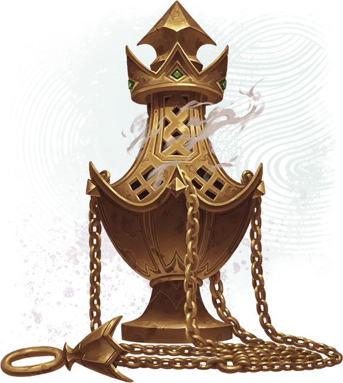

Кадило пленения духов
Spirit-Binding Censer
Чудесный предмет, артефакт (требуется настройка)

Это латунное кадило приятно тёплое на ощупь.
Сотворение заклинаний. Кадило имеет 10 зарядов и восстанавливает 1к6 потраченных зарядов на каждом рассвете. Пока вы держите его в руке, вы можете сотворить с его помощью одно из перечисленных в следующей таблице заклинаний (Сл спасброска 18). Таблица также показывает, сколько зарядов нужно потратить для сотворения заклинания.
Заклинания кадила
| Заклинание | Требуемые заряды |
| Благословение | 1 |
| Рассеивание магии | 3 |
| Снятие проклятия | 3 |
| Изгнание | 4 |
| Круг силы | 5 |
Оберегающие благовония. Пока вы держите кадило, вы можете действием Магия раскурить его; клубы магического дыма заполняют исходящую от кадила 30-футовую Эманацию в течение 1 часа или пока вы не окончите эффект (действий не требуется). Эта Эманация — Слабо заслонённая местность, а выбранные вами существа (включая вас) получают преимущества Защиты от зла и добра, пока находятся в Эманации. Как только вы используете это свойство, вы не можете сделать это снова до следующего рассвета.
Заточение души. Когда существо умирает в пределах 30 футов от вас, пока вы держите кадило, вы можете втянуть душу существа в кадило, заточив её внутри.
Пока душа существа заточена в кадиле, это существо нельзя вернуть к жизни. Если у существа была особенность, позволяющая ему возродиться — например, Восстановление дьявола Шипастого дьявола или свойство Филактерия Лича, — эта особенность не действует, пока душа существа заточена. Кадило может вмещать только одну душу за раз. Душа существа остаётся заточённой в кадиле 100 лет, или пока вы действием Магия не высвободите её, или пока кадило не будет уничтожено.
Случайные свойства. Кадилообладает следующими случайными свойствами:
1 малое положительное свойство
1 основное положительное свойство
Уничтожение кадила. Если в кадиле не заточена душа, оно уничтожается после года погружения в реку Стикс.